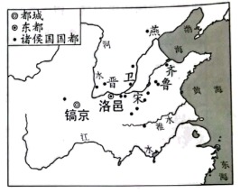
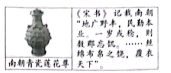
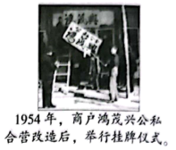
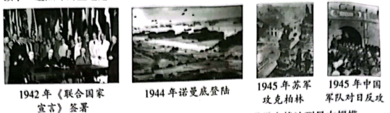
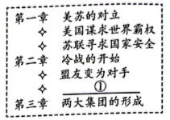
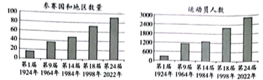
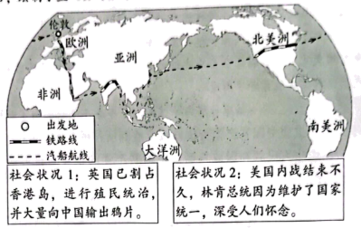
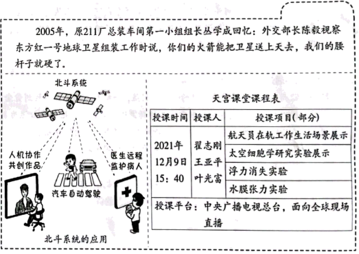

2022年北京市中考历史真题 原卷解析
2022年北京市初中学业水平考试
历史试卷
第一部分
本部分共20题，每题1.5分，共30分。在每题列出的四个选项中，选出最符合题目要求的一项。
1. 西周初年的整体战略是稳定西北，开发东南。在东进过程中，齐、鲁是前哨，卫国接济东进主力，也北瞰燕翼，东控徐准。（见图）这反映出西周统治者（ ）

A. 制定刑法，稳定统治秩序B. 躲避战乱，多次迁移国都
C. 实行分封，扩大统治范围D. 发展生产，兴修水利工程
【答案】C
【解析】
【详解】根据题干“西周初年的整体战略是稳定西北，开发东南……齐、鲁是前哨，卫国接济东进主力，也北瞰燕翼，东控徐准”结合所学知识，这反映出西周统治者实行分封，扩大统治范围。西周初年，周王根据血缘关系的远近和功劳的大小，将宗亲和功臣分封到各地，授予他们管理土地和人民的权力，建立诸侯国，以保证周王朝对地方的控制，同时稳定政局，扩大统治范围，C项正确；“躲避战乱，多次迁移国都”指的是商朝，排除B项；题干没有涉及“制定刑法，稳定统治秩序”、“发展生产，兴修水利工程”的信息，排除AD项。故选C项。
2. 春秋后期，某学派首倡“仁爱”，以“爱”释“仁”，开创“仁爱”思想教化的先河。这一学派是（ ）
A. 道家B. 儒家C. 墨家D. 法家
【答案】B
【解析】
【详解】根据材料并结合所学知识可知，儒家学派首倡“仁爱”，以“爱”释“仁”，开创“仁爱”思想教化的先河，B项正确；道家提倡无为而治，排除A项；墨家主张兼爱非攻，排除C项；法家主张法治，排除D项。故选B项。
3. 有学者认为，自秦始皇以后，中国人明白了自己的国家应该是什么样子，虽有曲折，历史大势终归是要回到统一国家的正轨上来。他意在说明（ ）
A. 王室衰微 表现B. 商靹变法的背景C. 秦灭六国的过程D. 秦朝统一的意义
表现B. 商靹变法的背景C. 秦灭六国的过程D. 秦朝统一的意义
【答案】D
【解析】
【详解】根据材料“自秦始皇以后，中国人明白了自己的国家应该是什么样子”并所学知识可知，秦的统一，结束了春秋战国以为诸侯国长期征战混乱的局面，建立起我国历史上第一个统一的多民族的封建国家，D项正确；王室衰微的表现是春秋时期，排除A项；商靹变法的背景是战国时期，排除B项；秦灭六国的过程材料未体现，排除C项。故选D项。
4. 《史记》记载，汉文帝要求“治霸陵皆以瓦器，不得以金银铜锡为饰”。2021年中国十大考古发现之一的陕西西安江村大墓即汉文帝霸陵，其中大部分文物都是陶，还有陶器、铁器小件。这表明（ ）
①考古发现可以证实文献记载 ②《史记》所有记载都真实可信
③汉文帝提倡节俭，反对奢侈 ④诸侯王的封地和势力越来越小
A. ①②B. ①③C. ②④D. ③④
【答案】B
【解析】
【详解】根据题干“《史记》记载，汉文帝要求‘治霸陵皆以瓦器，不得以金银铜锡为饰’……2021年中国十大考古发现之一的陕西西安江村大墓即汉文帝霸陵，其中大部分文物都是陶，还有陶器、铁器小件”可知，考古发现可以证实问下记载，①符合题意；题干“汉文帝要求‘治霸陵皆以瓦器，不得以金银铜锡为饰’……汉文帝霸陵，其中大部分文物都是陶，还有陶器、铁器小件”表明，汉文帝提倡节俭，反对奢侈，③符合题意，综上所述①③符合题意，B项正确；《史记》所有记载都真实可信中“都真实可信”说法太绝对，②不符合题意，排除AC项；题干没有涉及“诸侯王的封地和势力越来越小”的信息，排除D项。故选B项。
5. 下图文材料说明（ ）

A. 三国鼎立局面形成B. 文学艺术繁荣发展
C. 江南地区得到开发D. 南方经济超过北方
【答案】C
【解析】
【详解】根据题干材料“南朝青瓷莲花尊”、“《宋书》记载南朝“地广野丰，民勤本业。一岁或稔，则数郡忘饥。……丝绵布帛之饶，覆衣天下””并结合所学知识可知，《宋书》是一部记述南朝刘宋一代历史的纪传体史书。西晋末年以来，大批北方人民为躲避战乱南下，推动了江南地区得到开发，C项正确；题干材料说明的是江南地区得到开发，与三国鼎立局面形成无关，排除A项；题干材料说明的是江南地区得到开发，没有涉及文学艺术繁荣发展，排除B项；南方经济超过北方是在南宋时期，排除D项。故选C项。
6. 唐朝与70多个国家或地区有官方往来，允许各国人来留学、经商，吸收许多外国人担任官职。唐朝的文学艺术对日本、高丽等国影响深远，丝织技术传到西亚、欧洲。这反映出唐朝（ ）
A. 中外交往繁盛B. 政治制度完善C. 民族关系和睦D. 南北交流加强
【答案】A
【解析】
【详解】根据材料“唐朝与70多个国家或地区有官方往来，允许各国人来留学、经商，吸收许多外国人担任官职、唐朝的文学艺术对日本、高丽等国影响深远，丝织技术传到西亚、欧洲”可知，唐朝与他国之间有政治、经济交流，中外交往繁盛，A项正确；政治制度完善，材料未体现，排除B项；民族关系和睦是唐朝与少数民族之间，排除C项；南北交流加强，材料未体现，排除D项。故选A项。
7. 下侧是《唐宋发行铜币数目统计表》和《北宋纸币铜版拓片》。材料体现出宋代（ ）

A. 商业活动时间、空间不再受限B. 外贸所得在财政中占重要地位
C. 商业贸易繁荣的程度超过唐代D. 都市出现娱乐兼营商业的场所
【答案】C
【解析】
【详解】根据图片结合所学知识可知，图片反映唐朝时期主要使用铜币，北宋时期出现纸币，纸币出现的原因是商业的繁荣，图片反映宋代商业贸易繁荣的程度超过唐代，C项正确；图片没有体现商业活动时间、空间不再受限，排除A项；图片没有涉及外贸所得，排除B项；图片没有体现都市出现娱乐兼营商业的场所，排除D项。故选C项。
8. 乾隆时，六世班禅拒绝了英国殖民者与西藏地方建立直接联系的要求，明确表示西藏的一切无不听命于朝廷。为纪念他的功绩，乾隆皇帝下令修建了清净化城塔（见下图，位于北京西黄寺内）。此塔的修建见证了（ ）

A. 统一多民族国家巩固B. 清朝经济的恢复发展
C. 清朝东北边疆的稳定D. 文化专制政策的推行
【答案】A
【解析】
【详解】六世班禅是藏传佛教格鲁派领袖，他拒绝了英国殖民者与西藏地方建立直接联系的要求，明确表示西藏的一切无不听命于朝廷。乾隆皇帝修建清净化城塔是为了纪念六世班禅的功绩。清净化城塔的修建见证了清朝前期统一多民族国家巩固，A项正确；清朝经济的恢复发展与题干信息无关，排除B项；西藏属于中国西南边疆，排除C项；文化专制政策的推行与题干信息无关，排除D项。故选A项。
9. 中国古代科技成就对世界文明发展具有重要推动作用。下表①处应为（ ）
科技成就 | 传播及影响 |
造纸术 | 8世纪传播到阿拉伯地区，新型纸张取代了羊皮纸和纸草纸 |
① | 14世纪初传到欧洲，对其作战方式产生巨大影响，推动了社会变革 |
《本草纲目》 | 17世纪被翻译为拉丁文等文字，促进了欧洲植物学的发展 |
A. 《齐民要术》B. 火药C. 活字印刷术D. 《农政全书》
【答案】B
【解析】
【详解】根据材料结合所学可知中国人发明的火药在宋元时期广泛用于战争，后来传到欧洲，对其作战方式产生巨大影响，推动了社会变革，B项正确；《齐民要术》是贾思勰所著农业著作，排除A项；活字印刷术对人类文明的发展产生重大的影响，排除C项；《农政全书》是明代农学作品，不符题意，排除D项。故选B项。
10. 甲午中日战争的失败使得许多有识之士认识到，当时中国面临的最迫切的任务不是“自强”“求富”，而是“救亡”。此后资产阶级进行了两条路径的“救亡”探索，代表性的事件是（ ）
A. 虎门销烟、金田起义B. 金田起义、洋务运动
C. 洋务运动、百日维新D. 百日维新、辛亥革命
【答案】D
【解析】
【详解】根据题干材料“甲午中日战争的失败使得许多有识之士认识到”、“此后资产阶级进行了两条路径的“救亡”探索”并结合所学知识可知，甲午战后，资产阶级进行的救亡有百日维新和辛亥革命，D项正确；1839年的虎门销烟，维护了中华民族的尊严和利益。1850年末至1851年初，由洪秀全等组成的领导集团经过多年筹备后，发动对满清朝廷的武力对抗，在金田村庄严宣告起义，排除A项；1850年末至1851年初，由洪秀全等组成的领导集团经过多年筹备后，发动对满清朝廷的武力对抗，在金田村庄严宣告起义。洋务运动是19世纪六十到九十年代地主阶级的自救运动，排除B项；洋务运动是19世纪六十到九十年代地主阶级的自救运动，排除C项。故选D项。
11. 1917年，《新青年》发表《旧思想与国体问题》一文，指出国人的头脑仍然装满“帝制时代的旧思想”，如要巩固共和，“非先将国民脑子里所有反对共和的旧思想，一一洗刷干净不可”。该文作者应是（ ）
A. 李鸿章B. 康有为C. 张謇D. 陈独秀
【答案】D
【解析】
【详解】根据题干材料“1917年，《新青年》发表《旧思想与国体问题》一文，指出国人的头脑仍然装满“帝制时代的旧思想”，如要巩固共和，“非先将国民脑子里所有反对共和的旧思想，一一洗刷干净不可””可知，该文作者是在新文化运动时期发表的，主张改变人们的思想，所以该文作者是陈独秀，D项正确；李鸿章是洋务运动的代表人物，主张学习西方先进技术，维护清朝统治，排除A项；康有为是维新变法的代表人物，主张通过改革建立君主立宪制，排除B项；张謇，著名的状元实业家，主张实业救国，排除C项。故选D项。
12. 下表是1932年社会局统计的北平市各类车辆数量（单位：辆）。这反映出近代交通工具（ ）
类别 | 自行车 | 人力车 | 马车 | 汽车 | 摩托车 | 骡马大车 |
教量 | 64100 | 42900 | 300 | 2200 | 40 | 9400 |
A. 呈现出新旧并存的特征B. 受到新式教育发展的影响
C. 体现出自由平等的风尚D. 变化首先出现在沿海地区
【答案】A
【解析】
【详解】根据材料“1932年社会局统计北平市各类车辆数量”结合所学可知这里有新式的交通工具如汽车、摩托车、自行车；也有人力车、马车和骡马大车等传统的交通工具，从而说明1932年的北京城的交通工具提出出新旧并存的特征，A项正确；新式交通工具的产生可以受到新式教育发展的影响，但是传统交通工具占比更大，B项说法不全面，排除；自由平等是对社会发展的评价，交通工具不能体现，排除C项；材料是北平交通工具数量，D项在材料不能体现，排除。故选A项。
13. 下侧照片是我国20世纪50年代经济领域重大变革的一个场景。这一变革的作用是（ ）

A. 建立了社会主义公有制B. 实现了社会主义工业化
C. 保卫了广大中国人民和平生活D. 确立了社会主义市场经济体制
【答案】A
【解析】
【详解】根据题干材料“下侧照片是我国20世纪50年代经济领域重大变革的一个场景”、“1954年，商户鸿茂兴公私合营改造后，举行挂牌仪式”可以判断，题干材料反映的20世纪50年代的经济领域的重大变革指的是三大改造。1956年，三大改造的完成，标志着建立社会主义公有制，社会主义制度在我国建立起来，A项正确；20世纪50年代，我国工业比较落后，1957年，一五计划的完成，为我国工业化奠定基础，没有实现社会主义工业化，排除B项；题干材料体现的是经济领域的重大变革，没有涉及保卫了广大中国人民和平生活，排除C项；1992年，中共十四大召开，明确提出我国要建立社会主义市场经济体制，排除D项。故选A项。
14. 以下大事年表的名称应是（ ）
时间 | 1640年 | 1688年 | 1787年 | 1789年 | 1804年 |
事件 | 英国议会重新召开 | 英国发生 “光荣革命” | 美国宪法制定 | 巴黎人民攻占巴士底狱 | 《拿破仑法典》颁布 |
A. 封建时代的欧洲B. 君主立宪制逐渐形成
C. 资本主义制度的初步确立D. 殖民地人民的反抗斗争
【答案】C
【解析】
【详解】结合所学知识可知，1640年英国议会的重新召开，标志着英国资产阶级革命的开始。1688年，光荣革命，英国资产阶级革命结束，确立了资本主义制度。依据1787年美国宪法美国建立了联邦制共和国，确立了资本主义制度。1789年，巴黎人民攻占巴士底狱，法国大革命开始，1804年，颁布《拿破仑法典》，巩固了法国大革命的成果，确立了资本主义制度，C项正确；美国属于美洲，不是欧洲，排除A项；英国通过1689年《权利法案》确立君主立宪制，美国和法国都确立了共和制，排除B项；英国与法国反抗的是本国的封建专制，排除D项。故选C项。
15. 1871年，明治政府派岩仓使团出访欧美。使团成员认识到“英国之制作，其基本在于煤铁”“国之生利益者，最重工业，而应以纺织为第一”。这一认识推动日本在改革中（ ）
A. 废除农奴制，开启近代化B. “殖产兴业”，发展近代经济
C. 废藩置县，加强中央集权D. 颁布宪法，确立了共和体制
【答案】B
【解析】
【详解】根据材料“英国之制作，其基本在于煤铁”、“国之生利益者，最重工业，而应以纺织为第一”，可知，这属于经济领域，这使明治政府认识到发展经济重要性，因此明治维新在经济上，推行地税改革，以“殖产兴业”为口号，大力发展近代经济，B项正确；废除农奴制，开启近代化这是1861年俄国的农奴制改革，排除A项；明治维新政治上，废藩置县，加强中央集权，排除C项；日本没有确立共和体制，排除D项。故选B项。
16. 据统计，第一次世界大战死亡人数是1790-1914年间欧洲主要战争中死亡人数总和两倍以上；战争期间，英国国债总额提高了12倍，德国的国家负债增加了30倍。以上材料说明一战（ ）
A. 是帝国主义瓜分世界的战争B. 以同盟国集团的失败告终
C. 给人类社会带来了巨大灾难D. 结束后确立新的国际秩序
【答案】C
【解析】
【详解】根据材料“第一次世界大战死亡人数是1790-1914年间欧洲主要战争中死亡人数总和的两倍以上、战争期间，英国国债总额提高了12倍，德国的国家负债增加了30倍。”可知，一战带来巨大的人员伤亡和经济损失，给人类社会带来了巨大灾难，C项正确；一战是帝国主义瓜分世界的战争 ，这是战争的性质不是影响，排除A项；以同盟国集团的失败告终，这是战争的结果，与材料无关，排除B项；结束后确立新的国际秩序，这是战后的影响，排除D项。故选C项。
17. 1935年，美国政府成立农村电气化管理局，提供低息贷款发展农村供电系统。1941年，美国五分之二的农场用上了电。这得益于（ ）
A. 粮食税代替余粮收集制B. 国家对经济的干预
C. 高度集中的指令性计划D. 互联网技术的应用
【答案】B
【解析】
【详解】根据题干“1935年，美国政府成立……提供低息贷款发展农村供电系统。1941年，美国五分之二的农场用上了电”结合所学知识，这得益于国家对经济的干预。1933年，罗斯福采取罗斯福新政，采用国家干预手段来扭转经济形势，B项正确；粮食税代替余粮收集制是1921年苏俄开始实施的新经济政策的内容，排除A项；高度集中的指令性计划与苏联模式有关，排除C项；互联网技术是随着计算机的发明和普及，数据库和计算机网略开始建立起来，排除D项。故选B项。
18. 以下一组照片的主题是（ ）

A. 法西斯国家的侵略扩张B. 第二次世界大战达到最大规模
C. 盟军开辟欧洲第二战场D. 世界反法西斯战争走向胜利
【答案】D
【解析】
【详解】根据材料“1942年《联合国家宣言》签署、1944年诺曼底登陆、1945年苏军攻克柏林、1945年中国军队对日反攻”可知，这是第二次世界大战期间，世界反法西斯战争走向胜利，D项正确；材料未体现德意日法西斯国家的侵略扩张，排除A项；太平洋战争爆发第二次世界大战达到最大规模，排除B项；盟军开辟欧洲第二战场是诺曼底登陆，排除C项。故选D项。
19. 下侧是一部历史著作的目录（部分）。其中①处应为（ ）

A. 杜鲁门主义的提出B. 西欧国家走向联合
C. 不结盟运动的兴起D. 联合国作用的增强
【答案】A
【解析】
【详解】根据题干“冷战开始、盟友变为对手①”结合所学知识，1947年，杜鲁门主义出台，标志着美、苏战时同盟关系正式破裂，冷战开始，故①对应杜鲁门主义出台，A项正确；题干目录没有涉及西欧国家走向联合、 不结盟运动的兴起、 联合国作用的增强的内容，排除BCD项。故选A项。
20. 将中国历史放在世界历史演进的大背景中，可以更好地理解中国历史发展。以下各项对应正确的是（ ）
序号 | 中国历史事件 | 世界历史背景 |
① | 丝绸之路开通 | 16世纪“三角贸易”开站 |
② | 郑成功收复台湾 | 17世纪荷兰进行殖民侵略 |
③ | 李大钊系统介绍马克思主义 | 1917年俄国十月革命 |
④ | 五四运动爆发 | 1919年巴黎和会 |
A. ①②③B. ①②④C. ①③④D. ②③④
【答案】D
【解析】
【详解】根据所学知识可知，丝绸之路通常是指欧亚北部的商路，与南方的茶马古道形成对比，西汉时张骞和东汉时班超出使西域开辟的以长安(今西安)、洛阳为起点，经甘肃、新疆，到中亚、西亚，并连接地中海各国的陆上通道。陆上丝绸之路起源于西汉（前202年—8年），“三角贸易”是16世纪，①错误；郑成功收复台湾从荷兰殖民者手中收复台湾，②正确；1917年俄国十月革命的一声炮响为中国送来了马克思主义，李大钊最先在中国宣传马克思主义，③正确；1919年巴黎和会中国外交失败引起了五四运动，④正确，由此可知②③④说法无误，D项正确；ABC不符合题意，排除。故选D项。
第二部分
本部分共4题，共40分。
21. 冰雪文化：传承·交流·超越
材料一 中国古代冰雪活动
时期 | 相关史实 |
隋唐 | 北方少数民族踩着木质器具在冰上滑行，追逐猎物 |
元代 | 建立了四通八达的驿站，辽阳行省驿站使用狗拉雪橇。马可·波罗在游记中也记载了这种交通工具 |
清代 | 滑冰者借鉴武术、杂技等传统文化内容，利用新出现的铁质冰刀，做出高难度动作，得到观众赞赏 |
清廷每年冬至举行冰嬉大典，考核八旗官兵滑冰、射箭等技能，传承尚武精神 |
（1）依据材料一并结合所学，分析元朝大规模建立驿站的作用。指出推动清代冰雪活动发展的因素。
材料二 冬奥会参赛情况（部分）

冬奥会初创阶段，参赛国主要集中在欧测、北美。这种情况从20世纪六七十年代开始发生变化，例如，第二次世界大战后独立的印度于1964年首次参加冬奥会，20世纪60年代独立的非洲国家塞内加尔、肯尼亚分别于1984年、1998年首次参加。迄今15个非洲国家参加了冬奥会，以中国为代表的许多亚洲国家进入冬奥会奖牌核。
——资料源自国际奥委会官网等
（2）依据材料二，说出冬奥会的发展趋势。结合所学，分析20世纪六七十年代后冬奥会参赛情况变化的原因。
材料三 自2015年北京成功中办冬奥会至2021年10月，全国居民参与过冰雪运动的人数为3．46亿，冰雪运动参与率为24．56%。2016-2017冰雪季全国冰雪休闲旅游人数为1．7亿人次，2020-2021冰雪季增加到2．54亿人次，冰雪休闲旅游收入超过3900亿元。
——2022年2月17日北京冬奥会带动三亿人参与冰雪运动专场新闻发布会
（3）依据材料三并结合现实生活，说说冬奥会对国家和你个人的影响。
【答案】（1）作用：加强中央对地方的控制；因素：市民阶层的文化需求；提高军队素质，传承尚武精神。
（2）趋势：参赛国家和地区数量在不断增加；运动员人数在不断增加。原因：更多国家取得民族独立；1991年苏联解体，冷战结束；和平与发展成为时代的主题。
（3）对国家：提高民众的集体荣誉感，国家认同感；推动旅游业的发展，提高经济发展水平；提升国民身体素质；提高国家的国际地位。对个人：提高自身的民族自豪感；参与体育运动，提高自身身体素质。
【解析】
【详解】（1）根据材料“建立了四通八达的驿站”并结合所学知识可知，中国的版图在元朝时期达到最大，为加强对地方的管理，元朝大规模建立驿站。根据材料“滑冰者借鉴武术、杂技等传统文化内容，利用新出现的铁质冰刀，做出高难度动作，得到观众赞赏、考核八旗官兵滑冰、射箭等技能，传承尚武精神”可知，推动清代冰雪活动发展主要是因为市民阶层的文化需求以及清朝为了提高军队素质，传承尚武精神。
（2）根据图片可知20世纪六七十年代后参加冬奥会的国家和地区数量在不断增加；运动员人数在不断增加。根据材料“第二次世界大战后独立的印度于1964年首次参加冬奥会，20世纪60年代独立的非洲国家塞内加尔、肯尼亚分别于1984年、1998年首次参加”可知主要是因为更多国家取得民族独立；1991年苏联解体，冷战结束；和平与发展成为时代的主题。
（3）根据材料“全国居民参与过冰雪运动的人数为3．46亿、冰雪休闲旅游收入超过3900亿元”并结合所学知识可知，对于国家来说，举办冬奥会可以提高民众的集体荣誉感，国家认同感；推动旅游业的发展，提高经济发展水平；提升国民身体素质；提高国家的国际地位。对个人来说可以提高自身的民族自豪感；参与体育运动，提高自身身体素质。
22. 中国共产党第十九届六中全会通过了《中共中央关于党的百年奋斗重大成就和历史经验的决议》（以下简称《决议》）。
材料一 《决议》对党的百年奋斗历程的四个历史时期进行了总结，每个时期的奋斗都有标志性的特点。
时期 | 新民主主义 革命时期 | 社会主义革命 和建设时期 | 改革开放和社会主义 现代化建设新时期 | 中国特色 社会主义新时代 |
特点 | 浴血奋战 百折不挠 | 自力更生 发愤图强 | 解放思想 锐意进取 | 自信自强 守正创新 |
史实 | A | B | C | ④构建人类命运共同体 |
（1）将下列史实填入相应位置。从以上四个史实中任选一个，说明它是如何反映该时期奋斗特点的。①大庆油田建成 ②深圳经济特区设立 ③红军长征
材料二 《决议》阐明了中国共产党百年奋斗的历史意义之一是深刻影响了世界历史进程。中国共产党在抗日战争中为世界反法西斯战争胜利作出了重要贡献；中国共产党首倡和平共处五项原则，同样为世界和平稳定作出重要贡献。中华人民共和国的成立，壮大了世界和平民主和社会主义的力量。中国共产党团结带领人民，仅用几十年时间走完了发达国家几百年走过的工业化进程，摆脱了西方那种靠殖民掠夺的模式，为人类发展开辟了新道路。
——摘编自陈伟等《党的百年奋斗深削影响了世界历史进程》
（2）运用史实，说明中国共产党为抗日战争胜利所作的贡献。依据材料二，指出中华人民共和国成立后，中国共产党的奋斗对世界历史进程的影响。
材料三 《决议》总结提炼了百年党史积累的宝贵经脸，即“十个坚持”。“十个坚持”既相互联系，又各有侧重。其中，坚持党的领导、坚持人民至上，是党百年奋斗的胜利之本和根本价值追求。
——摘编自王毅《“十个坚持”的逻辑体系与深刻内涵》
（3）结合历史或现实，参照示例，谈谈对“坚持人民至上”这一历史经验的认识。
示例：“坚持党的领导”：向井冈山进军途中，毛泽东在三湾对部队进行改编，建立党的各级组织，将党支部建立在连队上，确立了党对军队的绝对领导，是建设新型人民军队的重要开端。
【答案】（1）A：③；B：①；C：②。改革开放时期可以从 十一届三中全会召开，确立了解放思想，实事求是的思想路线，把工作重心转移到社会主义现代化建设上来。
（2）史实：百团大战：影响：中国共产党首倡和平共处五项原则，为世界和平稳定作出重要贡献；壮大了世界和平民主和社会主义的力量；摆脱了西方那种靠殖民掠夺的模式，为人类发展开辟了新道路。
（3）认识：“坚持人民至上”：“坚持人民至上”，民主革命时期带领民众打土豪，分田地。新中国成立后实行土地改革，让农民真正获得土地，改革开放之后实行“家庭联产承包责任制”，调动了农民的生产积极性。
【解析】
【小问1详解】
红军长征属于新民主主义革命时期，A填写③；大庆油田是社会主义探索填写时期，因此，B填写①；建成深圳经济特区设立是改革开放之后，因此，C填写②；第二问属于开放题，任意选择一个时期，比如选择改革开放时期可以从 十一届三中全会召开，确立了解放思想，实事求是的思想路线，把工作重心转移到社会主义现代化建设上来。
【小问2详解】
依据所学从敌后战场进行的百团大战回答。依据材料二“中国共产党首倡和平共处五项原则，同样为世界和平稳定作出重要贡献。中华人民共和国的成立，壮大了世界和平民主和社会主义的力量。中国共产党团结带领人民，仅用几十年时间走完了发达国家几百年走过的工业化进程，摆脱了西方那种靠殖民掠夺的模式，为人类发展开辟了新道路。”可得出中国共产党首倡和平共处五项原则，为世界和平稳定作出重要贡献；壮大了世界和平民主和社会主义的力量；摆脱了西方那种靠殖民掠夺的模式，为人类发展开辟了新道路。
【小问3详解】
本题属于开放题型，参照示例可以从中国共产党不仅仅在民主革命时期以及社会主义建设时期都“坚持人民至上”，民主革命时期带领民众打土豪，分田地。新中国成立后实行土地改革，让农民真正获得土地，改革开放之后实行“家庭联产承包责任制”，调动了农民的生产积极性。
23. 人类通过探索，不断扩大活动空间。
材料一 欧洲人探索世界的重要目的是追逐利益，一些人希望能直接找到黄金，另一些更精明的人则希望找到获得东方商品的新渠道。文艺复兴把好奇心视为美德，鼓励人们尽可能知道更多的事情，包括欧洲以外的世界。指南针和观象仪能帮助船员绘制更为精准的地图和海围。15世纪，葡萄牙人学习阿拉伯造船技术，造出了航速更快、操作更简便的超级大帆船。
——摘编自弗兰克·萨克雷等《世界大历史》
（1）依据材料一并结合所学，概括欧洲人开辟新航路的背景。举出开辟新航路过程中一位航海家的事迹。
材料二 儒勒·凡尔纳的小说《八十天环游地球》依据真实社会状况创作。一位同学阅读后，绘制了主人公的旅行路线示意围，并摘录书中时沿途社会状况的描述。

（2）依据材料二判断，这一旅行应该发生在______。（写序号）分别从交通工具和社会状况角度说明判断理由。
①14、15世纪，资本主义工商业兴起时期
②19世纪中期，第一次工业革命时期
材料三 中国航天事业发展资料卡

（3）依据材料三，谈谈中国航天事业发展的作用。
【答案】（1）背景：手工工场和租地农场的发展，欧洲市场需求逐渐扩大，商品经济日趋发达，新生资产阶级渴求开拓新的贸易市场；来自东方的商品在欧洲市场极受欢迎，《马可·波罗行纪》使欧洲社会出现关注东方的热潮；奥斯曼土耳其控制了东西方贸易的所有重要商道，迫使欧洲人寻求通往东方的新航路；文艺复兴倡导人要实现自己的价值；指南针运用于航海；造船技术的进步。航海家事迹：麦哲伦环球航线、哥伦布“发现”美洲等。
（2）②；理由：交通工具：第一次工业革命从18世纪60年代到19世纪中期，1825年，由斯蒂芬森设计的蒸汽机车正式试车，标志着铁路时代的开始，1807年富尔顿发明汽船。社会状况：1842年《南京条约》英国割占香港岛，1858年，根据《天津条约》中的有关原则规定，英法美三国胁迫清政府分别签订《通商章程善后条约》，规定了鸦片贸易合法化，美国内战是1861-1865年，由此可知是这一旅行应该发生在第一次工业革命时期。
（3）作用：有利于提高我国的国防实力；有利于提高我国的综合国力；有利于提高我国的国际地位。
【解析】
【详解】（1）根据材料“欧洲人探索世界的重要目的是追逐利益，一些人希望能直接找到黄金，另一些更精明的人则希望找到获得东方商品的新渠道、文艺复兴把好奇心视为美德、指南针和观象仪能帮助船员绘制更为精准的地图和海围。15世纪，葡萄牙人学习阿拉伯造船技术，造出了航速更快、操作更简便的超级大帆船”并结合所学知识可知，新航路开辟的背景是手工工场和租地农场的发展，欧洲市场需求逐渐扩大，商品经济日趋发达，新生资产阶级渴求开拓新的贸易市场；来自东方的商品在欧洲市场极受欢迎，《马可·波罗行纪》使欧洲社会出现关注东方的热潮；奥斯曼土耳其控制了东西方贸易的所有重要商道，迫使欧洲人寻求通往东方的新航路；文艺复兴倡导人要实现自己的价值；指南针运用于航海；造船技术的进步。航海家事迹：麦哲伦环球航行、哥伦布“发现”美洲等皆可。
（2）根据材料“英国已割占香港岛、美国内战结束不久”可知，是19世纪中期，第一次工业革命时期，选②；判断的理由从交通工具的角度看，第一次工业革命从18世纪60年代到19世纪中期，1825年，由斯蒂芬森设计的蒸汽机车正式试车，标志着铁路时代的开始，1807年富尔顿发明汽船，这都是第一次工业革命的成果。从社会状况的角度看，1842年《南京条约》英国割占香港岛，1858年，根据《天津条约》中的有关原则规定，英法美三国胁迫清政府分别签订《通商章程善后条约》，规定了鸦片贸易合法化，美国内战是1861-1865年，由此可知是这一旅行应该发生在19世纪中期，第一次工业革命时期。
（3）根据材料“我们腰杆就硬了、面向全球现场直播”可知，中国航天事业发展有利于提高我国的国防实力；有利于提高我国的综合国力；有利于提高我国的国际地位。
24. 北京农业的起源、发展与现代化
材料一 北京地区农业考古成果（部分）
① | ② | ③ |
| | |
新石器时代石磨盘和石磨棒（用于 加工谷物），平谷上宅遗址出土。 此处还发现了半地穴式房屋遗址 | 东汉陶仓（粮仓模型），昌平半截塔村汉墓出土 | 春秋晚期至战国中期铁镰（用于收割农作物），延庆胡家营遗址出土 |
（1）将材料一中的考古成果按所属的历史时期排序。（写序号）任选一项成果，说明该时期北京地区的生产状况。（示例除外）
示例：②；说明东汉时期重视粮食储存，折射出当时北京地区农业生产有较大发展。
材料二 金朝将东北地区的女真人、契丹人迁到中都周边地区，与当地百姓杂处，学习农耕，渐趋融合。中都城区及近郊居民达到80万，粮食需求量很大。金政府规定垦荒可以减免租税，还组织修建一系列水利工程，中都地区荒地被大量开发，产量更高的水稻得到进一步推广。
——摘编自曹子西《北京通史·第四卷》
（2）依据材料二，概括金朝北京地区农业发展的表现。结合时代背景，分析农业发展的影响。
材料三 1950年以后，京郊农民获得了土地。1952年粮食总产7.33亿千克，比1949年增长75.84%。1978年以后，农民有了生产经营自主权，自负盈亏，生产积极性提高。1984年粮食总产量达到21.8亿千克，比1978年增长17.2%。
近年来，北京农业出现新的变化。2014年以来，北京举办了世界马铃薯大会、世界月季洲际大会等国际农业会展活动。2017年休闲农业与民俗旅游接待游客4337.4万人次，比2014年增长13．4%。2018年全市“三品一标”（指无公害农产品、绿色食品、有机农产品和农产品地理标志）农产品认证覆盖率达71.8%，比2014年提高34.4个百分点。大兴西瓜、怀柔板栗、京西稻等优质农产品获得国家农产品地理标志认证。
——资料源自北京市统计局官网等
（3）依据材料三并结合所学，从农业政策角度分别指出1949－1952年、1978年以后北京地区农业发展的原因。概括近年来北京地区农业的发展趋势。
【答案】（1）排序：①③②；例如③；说明该时期北京地区铁农具、牛耕出现，促进农业上的深耕细作，折射出当时北京地区农业生产力水平有较大提高。
（2）表现：学习农耕；垦荒可以减免租税，修建水利工程；荒地被大量开发，水稻进一步推广。影响：有利于北京地区成为当时的经济中心，进一步促进北京的发展，这为北京后来成为金朝的首都奠定了基础。
（3）原因：土地改革、家庭联产承包责任制。趋势：会展农业的发展；休闲农业与民俗旅游相结合，发展都市型现代农业等。
【解析】
【小问1详解】
根据材料一，由“①新石器时代石磨盘和石磨棒……还发现了半地穴式房屋遗址”，可知与半坡时期相关；由“②东汉陶仓”，可知与东汉时期相关；由“③春秋晚期至战国中期铁镰（用于收割农作物）”，可知与春秋晚期至战国中期铁制农具相关，结合所学知识可知，材料中考古成果按所属的历史时期排序应该是①③②；例如③；说明该时期北京地区铁农具、牛耕出现，促进农业上的深耕细作，折射出当时北京地区农业生产力水平有较大提高。
 小问2详解】
小问2详解】
根据材料二，由“学习农耕，渐趋融合。中都城区及近郊居民达到80万，粮食需求量很大”，可知学习农耕；由“金政府规定垦荒可以减免租税，还组织修建一系列水利工程”，可知垦荒可以减免租税，修建水利工程；由“中都地区荒地被大量开发，产量更高的水稻得到进一步推广”，可知荒地被大量开发，水稻进一步推广。因此金朝北京地区农业发展的表现是，学习农耕；垦荒可以减免租税，修建水利工程；荒地被大量开发，水稻进一步推广。金朝北京地区农业发展的影响，有利于北京地区成为当时的经济中心，进一步促进北京的发展，这为北京后来成为金朝的首都奠定了基础。
【小问3详解】
根据材料三，由“1950年以后，京郊农民获得了土地。1952年粮食总产7.33亿千克，比1949年增长75.84%”，可知与土地改革相关；由“1978年以后，农民有了生产经营自主权，自负盈亏，生产积极性提高”，可知与家庭联产承包责任制相关；结合所学知识可知，1952年底的土地改革的完成，彻底摧毁了我国存在2000多年的封建土地制度，消灭了地主阶级；农民翻了身,得到了土地，成为土地的主人。这使人民政权更加巩固，也大大解放了农村生产力。1978年，安徽凤阳小岗村农民实行家庭联产承包责任制，分田包产到户，自负盈亏。扩大了农民生产的自主权，激发了农民的劳动热情，带来农村生产力的大解放，农业生产和农民收入均有很大提高。因此从农业政策角度分别指出1949－1952年、1978年以后北京地区农业发展的原因是土地改革、家庭联产承包责任制。由“2014年以来，北京举办了世界马铃薯大会、世界月季洲际大会等国际农业会展活动”，可知是会展农业的发展；由“2017年休闲农业与民俗旅游接待游客4337.4万人次，比2014年增长13．4%”，可知休闲农业与民俗旅游相结合，发展都市型现代农业。因此近年来北京地区农业的发展趋势是会展农业的发展；休闲农业与民俗旅游相结合，发展都市型现代农业等。